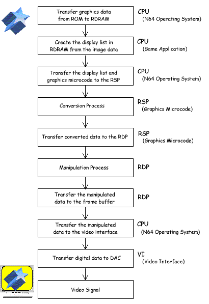

In the N64 graphics process, the CPU transfers the data accepted from the N64 Game Pak ROM to RDRAM. The CPU creates the display list (GBI command list) in RDRAM. Next, the RSP provides the geometry conversion by calculating the coordinate transformation by using the appropriate microcode. After that, the RDP creates the pixels for the drawing and transfers the data to the frame buffer in RDRAM. The CPU then transfers the data to the VI (Video Interface). VI transfers the accepted digital data to the video DAC and it is output as the TV screen from there.

Nintendo® Confidential
Copyright © 1999
Nintendo of America Inc. All Rights Reserved
Nintendo and N64 are registered trademarks of Nintendo
Last Updated March, 1999